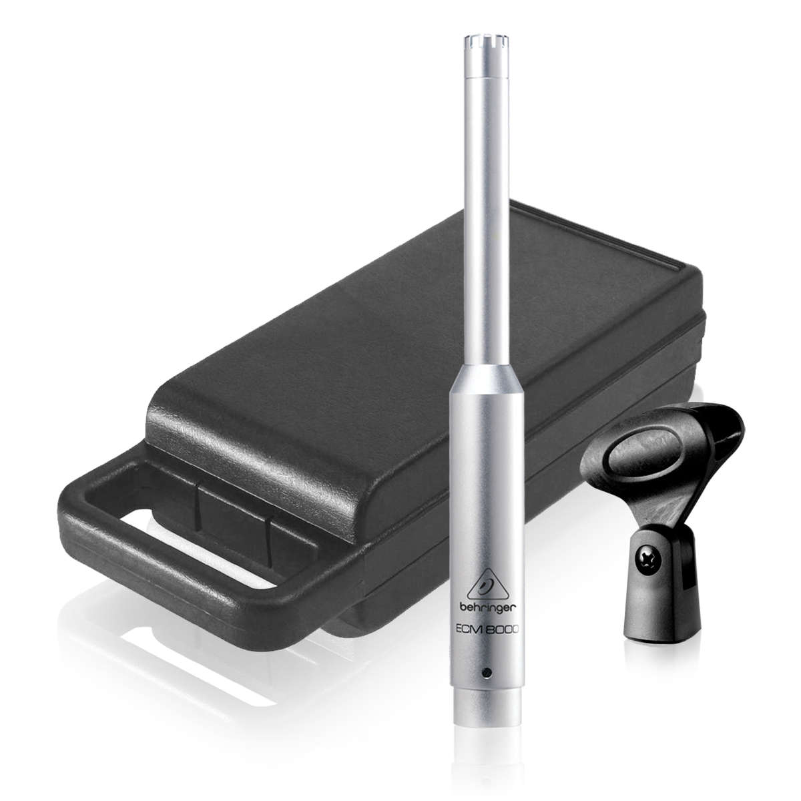
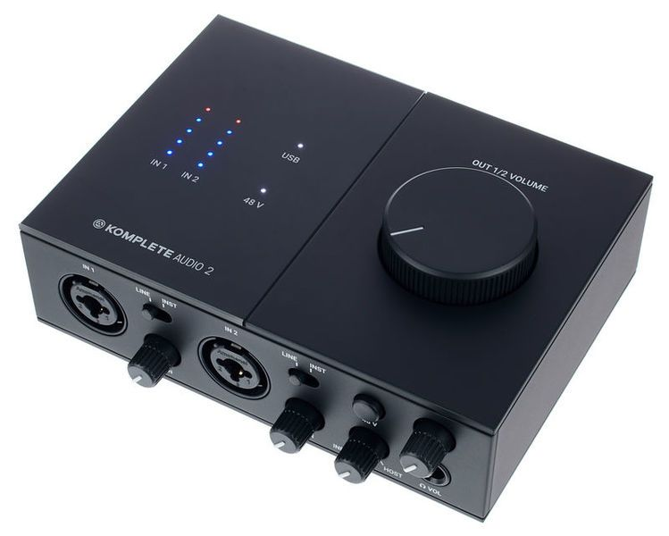
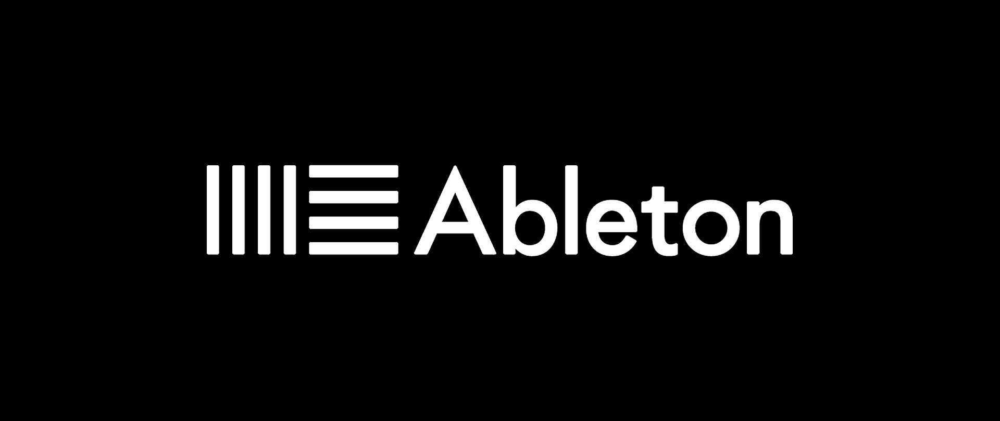

Captura y Procesamiento de Respuesta al Impulso
Proyecto Acústica UACh - Grupo X
Bienvenido al informe del proyecto de medición acústica.
👥 Integrantes del Grupo
- Nombre 1
- Nombre 2
- Nombre 3
🛠️ Equipamiento Utilizado

Micrófono: Behringer-ECM8000

Fuente sonora: Wood clapper

Grabadora/Interface: KOMPLETE Audio 1

Software: Ableton Live 12 Suite
📍 Recintos Medidos
1. Cámara Reverberante Acústica UACh
Descripción breve del recinto...
Video: Cámara Reverberante UACh
2. Edificio 14K
Descripción breve...
3. Edificio 6K
Descripción breve...
🎙️ Grabaciones en Cámara Anecoica
Grabaciones de voz e instrumento sin reverberación.
🔁 Convolución con Respuestas al Impulso
Aplicación de convolución para simular los recintos.
Voz en Cámara Reverberante
Instrumento en Recinto 2
📸 Galería Fotográfica
Aquí irían las fotos del proyecto cuando estén disponibles.